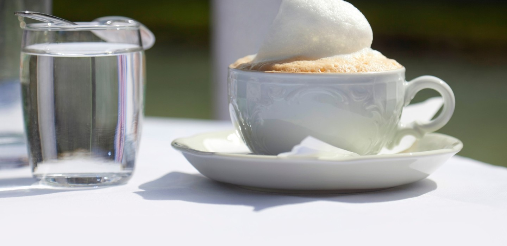
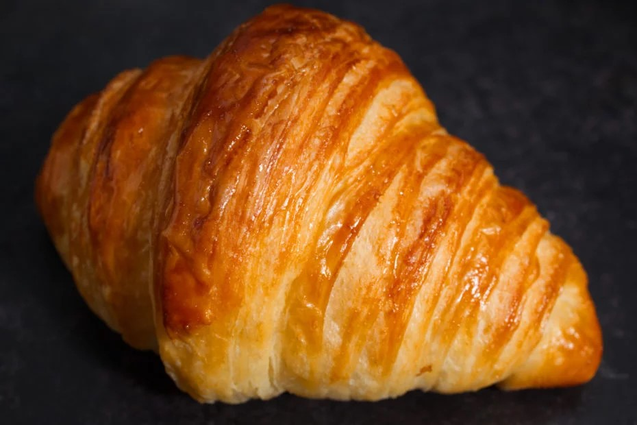

ainer
Streetfood Tour – Kaiser Bites
What’s included
Vienna has a rich streefodd tradition with over 200 Sausage stands, one of which is even a UNESCO world heritage site. You’ll experience:
- Welcome treat: Punschkrapfen
- Käsekrainer:The Käsekrainer is the most trending sausage for locals. Filled with little pockets of cheese and sizzled for hours.
- Käseleberkäse:Neither Käse nor Leber, this baked meatloaf with melting cheese cubes is a Viennese street food classic.
- Dessert: Classic Apfelstrudel with whipped cream
- Beverages: Local wine and beer included along the way
Price: €120 per person
Gallery

